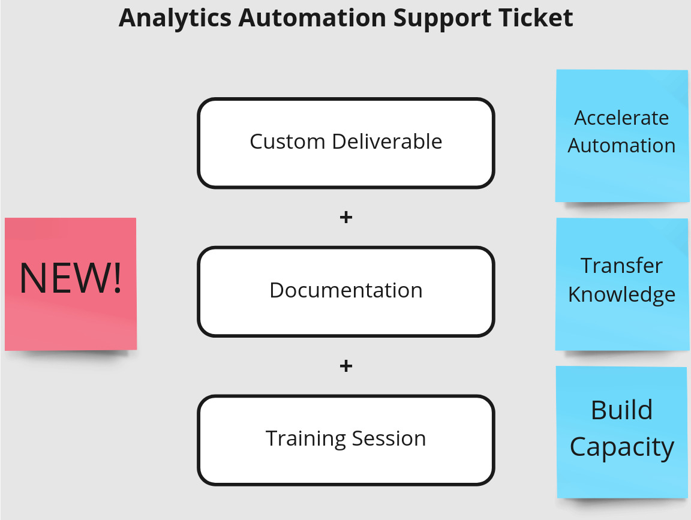

| Summary |
Description |
Benefit |
| Data Warehouse |
We are adding a Data Warehouse to our Standard Service. Building the pipelines that populate datasets in the Data Warehouse will consume Support Tickets. |
Providing a single access point for datasets makes it easier to analyze data and generate reports. The latest version of each dataset will be clearly marked. |
| MIT License |
The next version of the CrossCompute Analytics Automation System will be open source under the MIT License. We are writing documentation to help our system become the standard for analytics automation. |
You can generate revenue by selling licenses to analytics that organizations can include in their own customer and regulatory reports. |
| Progressive Disclosure |
We are upgrading the Automation Framework to support progressive disclosure forms that generate reports. |
Progressive disclosure increases the likelihood that a user will complete the form and submit data. |
| Support Documentation |
A Support Ticket now includes documentation and a training session in addition to custom service. The price of a Support Ticket has increased from $2,000 to $2,500. |
Documentation and training increase institutional capacity and knowledge. |
The Standard Service provides a dedicated server with the CrossCompute Analytics Automation System, which includes a Data Warehouse, Editing Service, Automation Framework, Publishing Platform and Analytics Marketplace.
| Service |
Benefit |
Price |
| Data Warehouse Integration |
Simplify analysis of frequently used datasets through a single access point. |
4-7 Support Tickets per Phase |
| Interactive Information Filters |
Help report readers pinpoint information in charts, tables, maps and calendars. |
3-5 Support Tickets per Phase |
| Hazard Mitigation Grant Proposal Wizard |
Help your community win Hazard Mitigation Grants to upgrade infrastructure. |
10 Support Tickets per Phase |

Custom Services are priced using Support Tickets. Each Analytics Automation Support Ticket ($2,500 / ticket) includes a custom deliverable, documentation and training session to accelerate report automation.